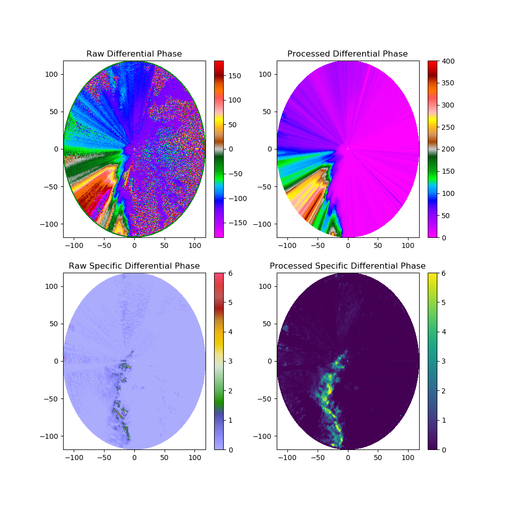
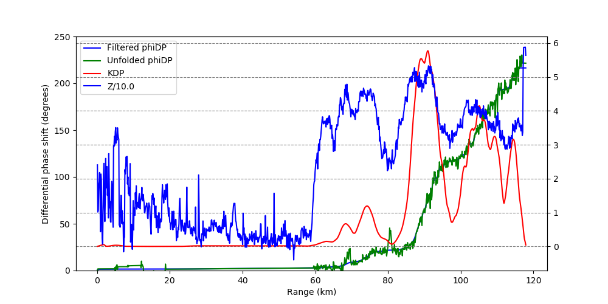

Note
Click here to download the full example code
Linear programming phase processing¶
An example of using linear processing to process the differential phase fields of a ARM C-SAPR radar.
- 
- 
Out:
Unfolding
/home/zsherman/dev/pyart/pyart/correct/phase_proc.py:167: RuntimeWarning: invalid value encountered in sqrt
_noise = smooth_and_trim(np.sqrt((line - signal) ** 2), window_len=wl)
Exec time: 0.6398978233337402
Doing 0
/home/zsherman/dev/pyart/examples/correct/plot_lp_phase_proc.py:58: UserWarning: Matplotlib is currently using agg, which is a non-GUI backend, so cannot show the figure.
plt.show()
/home/zsherman/dev/pyart/examples/correct/plot_lp_phase_proc.py:92: UserWarning: Matplotlib is currently using agg, which is a non-GUI backend, so cannot show the figure.
plt.show()
print(__doc__)
# Author: Jonathan J. Helmus (jhelmus@anl.gov)
# License: BSD 3 clause
import numpy as np
import matplotlib.pyplot as plt
import pyart
# perform LP phase processing (this takes a while)
radar = pyart.io.read_mdv('095636.mdv')
# the next line force only the first sweep to be processed, this
# significantly speeds up the calculation but should be commented out
# in production so that the entire volume is processed
radar = radar.extract_sweeps([0])
phidp, kdp = pyart.correct.phase_proc_lp(radar, 0.0, debug=True)
radar.add_field('corrected_differential_phase', phidp)
radar.add_field('corrected_specific_diff_phase', kdp)
# the following line can be used to save/load in preprocessed data
#pyart.io.write_cfradial('preprocessed.nc', radar)
#radar = pyart.io.read_cfradial('preprocessed.nc')
# create a plot of the various differential phase fields
display = pyart.graph.RadarDisplay(radar)
fig = plt.figure(figsize=(10, 10))
ax1 = fig.add_subplot(221)
display.plot('differential_phase', 0, ax=ax1,
title='Raw Differential Phase', colorbar_label='',
axislabels_flag=False)
ax2 = fig.add_subplot(222)
display.plot('corrected_differential_phase', 0, ax=ax2,
title='Processed Differential Phase', colorbar_label='',
axislabels_flag=False)
ax3 = fig.add_subplot(223)
display.plot('specific_differential_phase', 0, ax=ax3, vmin=0, vmax=6,
title='Raw Specific Differential Phase', colorbar_label='',
axislabels_flag=False)
ax4 = fig.add_subplot(224)
display.plot('corrected_specific_diff_phase', 0, ax=ax4, vmin=0, vmax=6,
title='Processed Specific Differential Phase',
colorbar_label='',
axislabels_flag=False)
plt.show()
# plot a fields from a single ray
display = pyart.graph.RadarDisplay(radar)
fig = plt.figure(figsize=[10, 5])
ax = fig.add_subplot(111)
ray_num = 191
# filtered phidp and unfolded phidp
display.plot_ray('corrected_differential_phase', ray_num, format_str='b-',
axislabels_flag=False, title_flag=False, ax=ax)
display.plot_ray('unfolded_differential_phase', ray_num, format_str='g-',
axislabels_flag=False, title_flag=False, ax=ax)
# set labels
ax.set_ylim(0, 250)
ax.set_ylabel('Differential phase shift (degrees)')
ax.set_xlabel('Range (km)')
# plot KDP and reflectivity on second axis
ax2 = ax.twinx()
display.plot_ray('corrected_specific_diff_phase', ray_num, format_str='r-',
axislabels_flag=False, title_flag=False, ax=ax2)
radar.add_field_like('reflectivity', 'scaled_reflectivity',
radar.fields['reflectivity']['data']/10.)
display.plot_ray('scaled_reflectivity', ray_num, format_str='b-',
axislabels_flag=False, title_flag=False, ax=ax2)
# decorate
ax2.yaxis.grid(color='gray', linestyle='dashed')
ax.legend(display.plots,
["Filtered phiDP", "Unfolded phiDP", 'KDP', 'Z/10.0'],
loc='upper left')
plt.show()
Total running time of the script: ( 0 minutes 25.899 seconds)